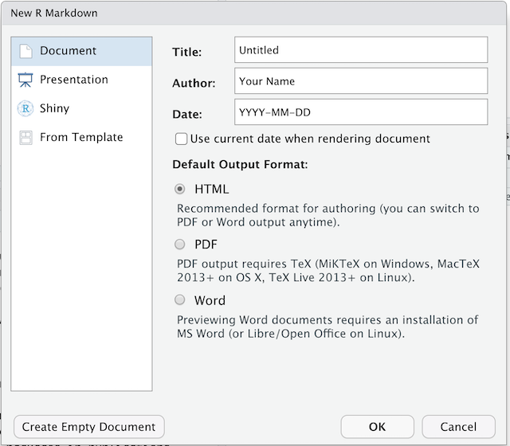

Toggle navigation
Home
Code of Conduct
Setup
Reference
Episodes
Introduction to R and RStudio
Project Management With RStudio
Seeking Help
Data Structures
Exploring Data Frames
Subsetting Data
Control Flow
Creating Publication-Quality Graphics
Vectorization
Functions Explained
Writing Data
Split-Apply-Combine
Dataframe Manipulation with dplyr
Dataframe Manipulation with tidyr
Producing Reports With knitr
Writing Good Software
Extras
About
Discussion
Figures
Instructor's Guide
License
R for Reproducible Scientific Analysis
: Figures
